Fiestas y tradiciones
37 recursos de Fiestas y tradiciones en español, sin preparación y con solucionario: fichas de lectura, búsquedas del tesoro y más, filtrables por grado.
37 recursos
Grado

«Fiestas de las religiones» – Búsqueda del tesoro de lectura

«La espera de Navidad» – Búsqueda del tesoro de lectura

«De la granja a la Navidad» – Búsqueda del tesoro de lectura

«Cometas en el cielo de otoño» – Búsqueda del tesoro de lectura
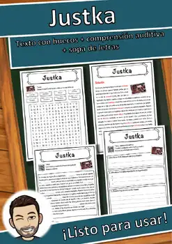
Justka – Ficha de lectura: texto con huecos, comprensión auditiva y sopa de letras
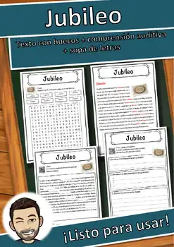
Jubileo – Ficha de lectura: texto con huecos, comprensión auditiva y sopa de letras
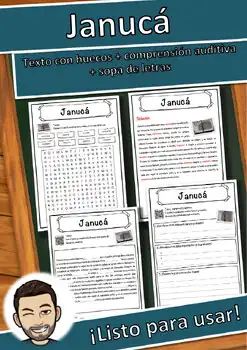
Janucá – Ficha de lectura: texto con huecos, comprensión auditiva y sopa de letras
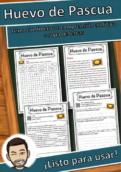
Huevo de Pascua – Ficha de lectura: texto con huecos, comprensión auditiva y sopa de letras
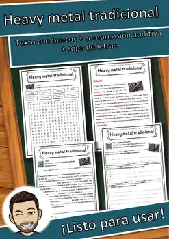
Heavy metal tradicional – Ficha de lectura: texto con huecos, comprensión auditiva y sopa de letras
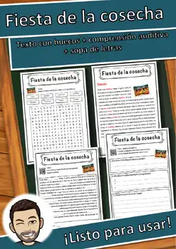
Fiesta de la cosecha – Ficha de lectura: texto con huecos, comprensión auditiva y sopa de letras

Año Nuevo – Ficha de lectura: texto con huecos, comprensión auditiva y sopa de letras
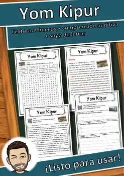
Yom Kipur – Ficha de lectura: texto con huecos, comprensión auditiva y sopa de letras
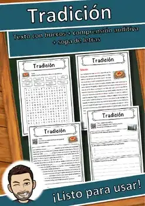
Tradición – Ficha de lectura: texto con huecos, comprensión auditiva y sopa de letras
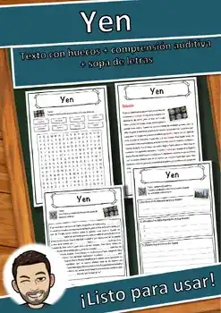
Yen – Ficha de lectura: texto con huecos, comprensión auditiva y sopa de letras
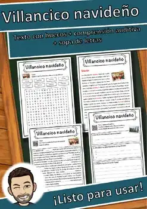
Villancico navideño – Ficha de lectura: texto con huecos, comprensión auditiva y sopa de letras
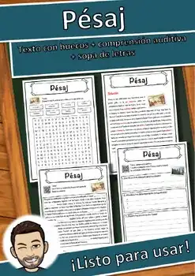
Pésaj – Ficha de lectura: texto con huecos, comprensión auditiva y sopa de letras
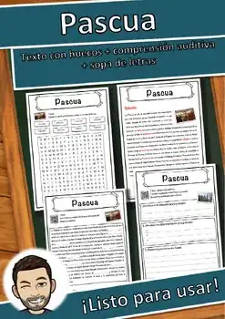
Pascua – Ficha de lectura: texto con huecos, comprensión auditiva y sopa de letras
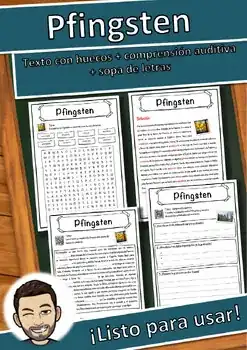
Pentecostés – Ficha de lectura: texto con huecos, comprensión auditiva y sopa de letras
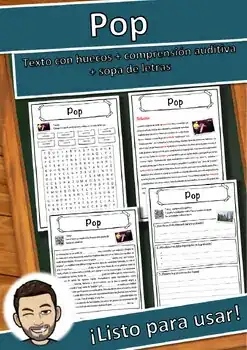
Pop – Ficha de lectura: texto con huecos, comprensión auditiva y sopa de letras
Papá Noel – Ficha de lectura: texto con huecos, comprensión auditiva y sopa de letras
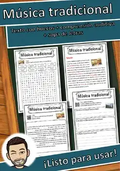
Música tradicional – Ficha de lectura: texto con huecos, comprensión auditiva y sopa de letras
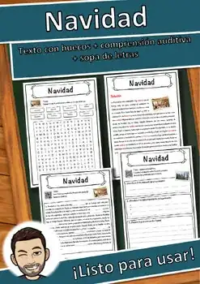
Navidad – Ficha de lectura: texto con huecos, comprensión auditiva y sopa de letras
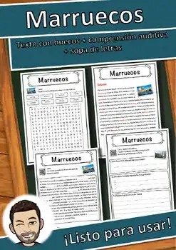
Marruecos – Ficha de lectura: texto con huecos, comprensión auditiva y sopa de letras
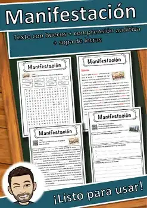
Manifestación – Ficha de lectura: texto con huecos, comprensión auditiva y sopa de letras
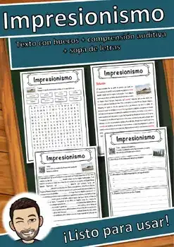
Impresionismo – Ficha de lectura: texto con huecos, comprensión auditiva y sopa de letras
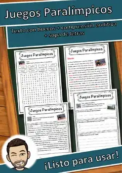
Juegos Paralímpicos – Ficha de lectura: texto con huecos, comprensión auditiva y sopa de letras
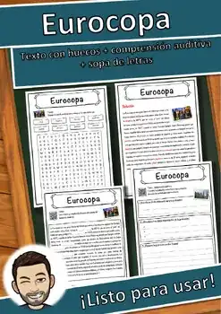
Eurocopa – Ficha de lectura: texto con huecos, comprensión auditiva y sopa de letras
Día festivo – Ficha de lectura: texto con huecos, comprensión auditiva y sopa de letras
Día de San Valentín – Ficha de lectura: texto con huecos, comprensión auditiva y sopa de letras
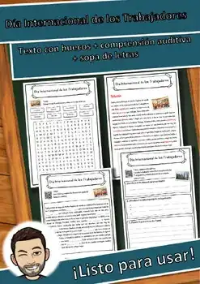
Día Internacional de los Trabajadores – Ficha de lectura: texto con huecos, comprensión auditiva y sopa de letras
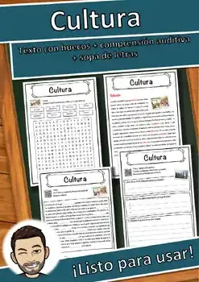
Cultura – Ficha de lectura: texto con huecos, comprensión auditiva y sopa de letras
Chechenia – Ficha de lectura: texto con huecos, comprensión auditiva y sopa de letras
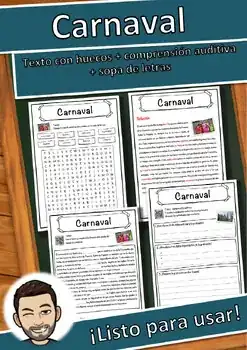
Carnaval – Ficha de lectura: texto con huecos, comprensión auditiva y sopa de letras
Aíd al-Adha – Ficha de lectura: texto con huecos, comprensión auditiva y sopa de letras
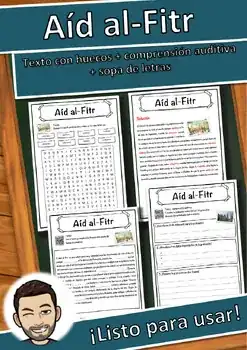
Aíd al-Fitr – Ficha de lectura: texto con huecos, comprensión auditiva y sopa de letras
Día de Todos los Santos
Día de Todos los Santos – Ficha de lectura: texto con huecos, comprensión auditiva y sopa de letras
Christkind
Christkind – Ficha de lectura: texto con huecos, comprensión auditiva y sopa de letras
No se encontraron recursos. Prueba con otra palabra o con otro filtro.